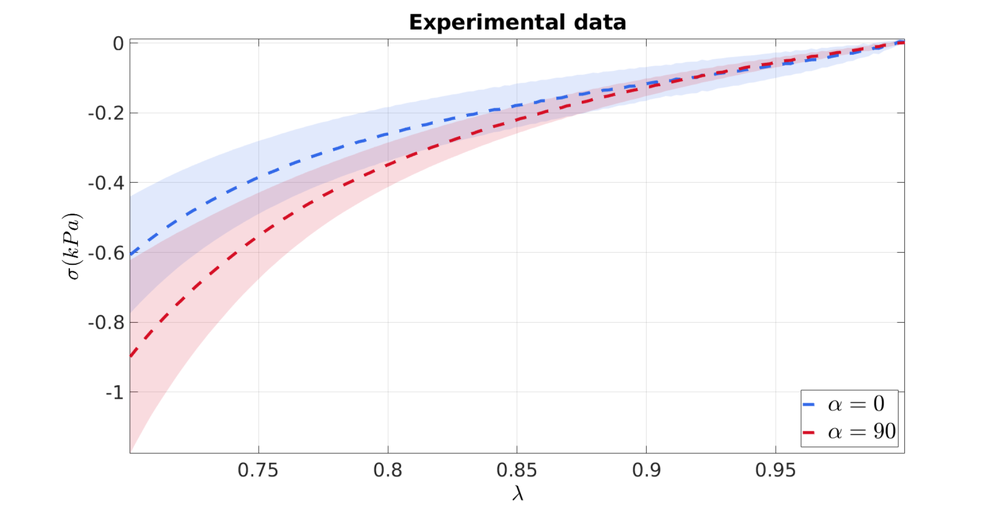
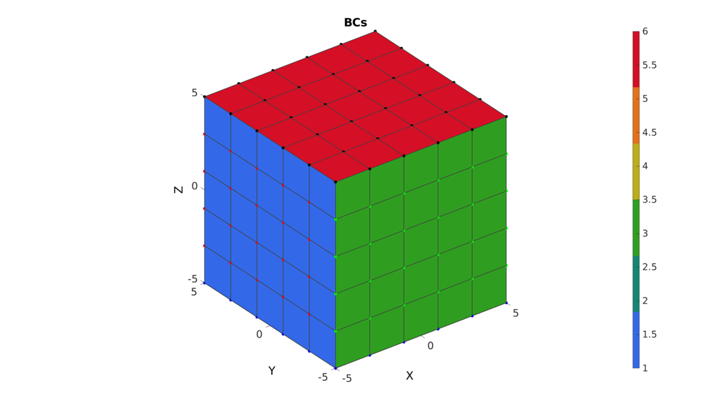
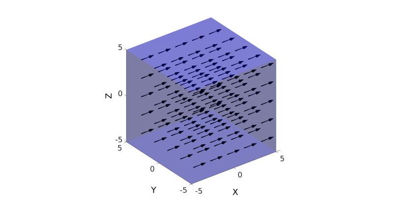
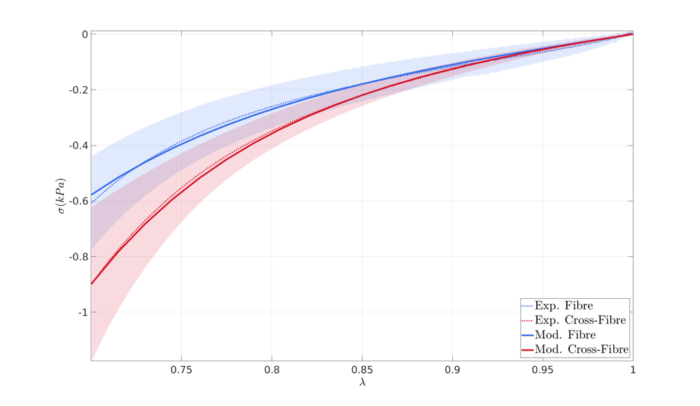

DEMO_FEBio_iFEA_uniaxial_transiso_01.m
Below is a demonstration for: 1) Inverse FEA based material parameter optimisation
Contents
clear; close all; clc;
Plot settings
fontSize=25; fontSize2=30; faceAlpha1=0.3; faceAlpha2=1; faceAlpha3=0.25; edgeColor=0.25*ones(1,3); edgeWidth=1.5; markerSize=25; lineWidth1=4; lineWidth2=3; fcolor1=0.2.*ones(1,3); fcolor2=0.5.*ones(1,3);
Control parameters
% path names defaultFolder = fileparts(fileparts(mfilename('fullpath'))); savePath=fullfile(defaultFolder,'data','temp'); modelEndName='iFEA_tempModel'; modelName=fullfile(savePath,modelEndName); %Specifying dimensions and number of elements sampleWidth=10; sampleThickness=10; sampleHeight=10; pointSpacings=2*ones(1,3); initialArea=sampleWidth*sampleThickness; numElementsWidth=round(sampleWidth/pointSpacings(1)); numElementsThickness=round(sampleThickness/pointSpacings(2)); numElementsHeight=round(sampleHeight/pointSpacings(3)); stretchLoad=0.7; displacementMagnitude=[0 0 (stretchLoad*sampleHeight)-sampleHeight]; %Initial material parameter set c1_ini=0.0006618290645; m1_ini=2.0000011857416; ksi_ini=0.0000906045135; beta_ini=3.1728247084040; f_ini=229.9578182262337; k_factor=500; k_ini=(c1_ini+ksi_ini)*k_factor; P_ini=[c1_ini m1_ini ksi_ini f_ini beta_ini]; alphaFib=0.5*pi; optimMethod=2; optimOpt=0; % FEA control settings numTimeSteps=20; %Number of time steps desired max_refs=25; %Max reforms max_ups=0; %Set to zero to use full-Newton iterations opt_iter=10; %Optimum number of iterations max_retries=5; %Maximum number of retires dtmin=(1/numTimeSteps)/100; %Minimum time step size dtmax=1/numTimeSteps; %Maximum time step size
LOAD EXPERIMENTAL DATA
% Set folder and file name pathName=fullfile(defaultFolder,'data','Loocke_2006'); fileName=fullfile(pathName,'LOOCKE_FIBRE_LANDSCAPE_CAUCHY.mat'); load(fileName); stretch_exp=ELAS_regular.L_DATA(:,1); stress_cauchy_exp=ELAS_regular.STRESS_DATA(:,[1 5]); stress_cauchy_exp_SD=ELAS_regular.SD_DATA(:,[1 5]); V_sd1=[[stretch_exp;flipud(stretch_exp)] [stress_cauchy_exp(:,1)-stress_cauchy_exp_SD(:,1);flipud(stress_cauchy_exp(:,1)+stress_cauchy_exp_SD(:,1))]]; F_sd1=1:size(V_sd1,1); V_sd2=[[stretch_exp;flipud(stretch_exp)] [stress_cauchy_exp(:,2)-stress_cauchy_exp_SD(:,2);flipud(stress_cauchy_exp(:,2)+stress_cauchy_exp_SD(:,2))]]; F_sd2=1:size(V_sd2,1);
Plotting experimental data
pColors=gjet(2); cFigure; hold on; title('Experimental data','FontSize',fontSize2); xlabel('$$\lambda$$','FontSize',fontSize2,'Interpreter','Latex'); ylabel('$$\sigma(kPa)$$','FontSize',fontSize2,'Interpreter','Latex'); patch('Faces',F_sd1,'Vertices',V_sd1,'EdgeColor','none','FaceColor',pColors(1,:),'FaceAlpha',faceAlpha3); patch('Faces',F_sd2,'Vertices',V_sd2,'EdgeColor','none','FaceColor',pColors(2,:),'FaceAlpha',faceAlpha3); hp(1)=plot(stretch_exp,stress_cauchy_exp(:,1),'k--','LineWidth',lineWidth1); set(hp(1),'Color',pColors(1,:)); hp(2)=plot(stretch_exp,stress_cauchy_exp(:,2),'k--','LineWidth',lineWidth1); set(hp(2),'Color',pColors(2,:)); h=legend(hp,'$$\alpha=0$$','$$\alpha=90$$','Location','SouthEast'); set(h,'Interpreter','Latex','FontSize',fontSize2); axis tight; set(gca,'FontSize',fontSize); box on; grid on; drawnow;
CREATING MESHED BOX
%Create box 1 boxDim=[sampleWidth sampleThickness sampleHeight]; %Dimensions boxEl=[numElementsWidth numElementsThickness numElementsHeight]; %Number of elements [box1]=hexMeshBox(boxDim,boxEl); E=box1.E; V=box1.V; Fb=box1.Fb; faceBoundaryMarker=box1.faceBoundaryMarker; X=V(:,1); Y=V(:,2); Z=V(:,3); VE=[mean(X(E),2) mean(Y(E),2) mean(Z(E),2)]; elementMaterialIndices=ones(size(E,1),1);
% Plotting boundary surfaces hf=cFigure; title('Model surfaces','FontSize',fontSize); xlabel('X','FontSize',fontSize); ylabel('Y','FontSize',fontSize); zlabel('Z','FontSize',fontSize); hold on; patch('Faces',Fb,'Vertices',V,'FaceColor','flat','CData',faceBoundaryMarker,'FaceAlpha',faceAlpha2,'lineWidth',edgeWidth,'edgeColor',edgeColor); colormap(gjet(6)); colorbar; set(gca,'FontSize',fontSize); view(3); axis tight; axis equal; grid on; drawnow;
DEFINE BC's
%Define supported node sets logicFace=faceBoundaryMarker==1; Fr=Fb(logicFace,:); bcSupportList_X=unique(Fr(:)); logicFace=faceBoundaryMarker==3; Fr=Fb(logicFace,:); bcSupportList_Y=unique(Fr(:)); logicFace=faceBoundaryMarker==5; Fr=Fb(logicFace,:); bcSupportList_Z=unique(Fr(:)); %Prescribed displacement nodes logicPrescribe=faceBoundaryMarker==6; Fr=Fb(logicPrescribe,:); bcPrescribeList=unique(Fr(:)); bcPrescribeMagnitudes=displacementMagnitude(ones(1,numel(bcPrescribeList)),:);
Visualize BC's
hf=cFigure; title('BCs','FontSize',fontSize); xlabel('X','FontSize',fontSize); ylabel('Y','FontSize',fontSize); zlabel('Z','FontSize',fontSize); hold on; patch('Faces',Fb,'Vertices',V,'FaceColor','flat','CData',faceBoundaryMarker,'FaceAlpha',faceAlpha2,'lineWidth',edgeWidth,'edgeColor',edgeColor); plotV(V(bcSupportList_X,:),'r.','MarkerSize',markerSize); plotV(V(bcSupportList_Y,:),'g.','MarkerSize',markerSize); plotV(V(bcSupportList_Z,:),'b.','MarkerSize',markerSize); plotV(V(bcPrescribeList,:),'k.','MarkerSize',markerSize); set(gca,'FontSize',fontSize); colormap(gjet(6)); colorbar; set(gca,'FontSize',fontSize); view(3); axis tight; axis equal; grid on; drawnow;
DEFINE FIBRE DIRECTIONS
[R,~]=euler2DCM([0,alphaFib,0]); v_fib=(R*[0 0 1]')'; V_fib=v_fib(ones(size(E,1),1),:);
Visualize fibre direction vectors
[Ff,Vf,Cf]=quiver3Dpatch(VE(:,1),VE(:,2),VE(:,3),V_fib(:,1),V_fib(:,2),V_fib(:,3),ones(size(V_fib,1),1),0.75*min(pointSpacings).*ones(1,2)); hf=cFigure; % title('Fibre vectors','FontSize',fontSize); xlabel('X','FontSize',fontSize); ylabel('Y','FontSize',fontSize); zlabel('Z','FontSize',fontSize); hold on; patch('Faces',Fb,'Vertices',V,'FaceColor','b','FaceAlpha',faceAlpha1,'edgeColor','none','LineWidth',0.5); patch('Faces',Ff,'Vertices',Vf,'FaceColor','k','FaceAlpha',1,'edgeColor','none'); % plotV(V(unique(Fb(:)),:),'k.','MarkerSize',markerSize); camlight headlight; view(3); axis tight; axis equal; grid off; %box on; set(gca,'FontSize',fontSize); drawnow;
CONSTRUCTING FEB MODEL
FEB_struct.febio_spec.version='2.0'; % Defining file names FEB_struct.run_filename=[modelName,'.feb']; %FEB file name FEB_struct.run_logname=[modelName,'.txt']; %FEBio log file name %Geometry section FEB_struct.Geometry.Nodes=V; FEB_struct.Geometry.Elements={E}; %The element sets FEB_struct.Geometry.ElementType={'hex8'}; %The element types FEB_struct.Geometry.ElementMat={elementMaterialIndices}; FEB_struct.Geometry.ElementsPartName={'Block'}; %Adding fibre direction, construct local orthonormal basis vectors [a,d]=vectorOrthogonalPair(V_fib); VF_E=zeros(size(V_fib,1),size(V_fib,2),2); VF_E(:,:,1)=a; %a1 ~ e1 ~ X or first direction VF_E(:,:,2)=d; %a2 ~ e2 ~ Y or second direction %Vf_E %a3 ~ e3 ~ Z, third direction, or fibre direction FEB_struct.Geometry.ElementData.MatAxis.ElementIndices=1:1:size(E,1); FEB_struct.Geometry.ElementData.MatAxis.Basis=VF_E; %Material section FEB_struct.Materials{1}.Type='solid mixture'; % FEB_struct.Materials{1}.AnisoType='mat_axis'; FEB_struct.Materials{1}.Solid{1}.Type='Ogden unconstrained'; FEB_struct.Materials{1}.Solid{1}.Properties={'c1','m1','cp'}; FEB_struct.Materials{1}.Solid{1}.Values={c1_ini,m1_ini,k_ini}; % FEB_struct.Materials{1}.Solid{2}.Type='fiber-exp-pow'; % FEB_struct.Materials{1}.Solid{2}.Properties={'ksi','alpha','beta','theta','phi'}; % FEB_struct.Materials{1}.Solid{2}.Values={ksi_ini,0,beta_ini,0,0}; % FEB_struct.Materials{1}.Solid{2}.AnisoType='mat_axis'; FEB_struct.Materials{1}.Solid{2}.Type='ellipsoidal fiber distribution'; FEB_struct.Materials{1}.Solid{2}.Properties={'ksi','beta'}; FEB_struct.Materials{1}.Solid{2}.Values={[ksi_ini ksi_ini f_ini*ksi_ini],[beta_ini beta_ini beta_ini]}; FEB_struct.Materials{1}.Solid{2}.AnisoType='mat_axis'; %Control section FEB_struct.Control.AnalysisType='static'; FEB_struct.Control.Properties={'time_steps','step_size',... 'max_refs','max_ups',... 'dtol','etol','rtol','lstol'}; FEB_struct.Control.Values={numTimeSteps,1/numTimeSteps,... max_refs,max_ups,... 0.001,0.01,0,0.9}; FEB_struct.Control.TimeStepperProperties={'dtmin','dtmax','max_retries','opt_iter'}; FEB_struct.Control.TimeStepperValues={dtmin,dtmax,max_retries,opt_iter}; %Defining node sets FEB_struct.Geometry.NodeSet{1}.Set=bcSupportList_X; FEB_struct.Geometry.NodeSet{1}.Name='bcSupportList_X'; FEB_struct.Geometry.NodeSet{2}.Set=bcSupportList_Y; FEB_struct.Geometry.NodeSet{2}.Name='bcSupportList_Y'; FEB_struct.Geometry.NodeSet{3}.Set=bcSupportList_Z; FEB_struct.Geometry.NodeSet{3}.Name='bcSupportList_Z'; % FEB_struct.Geometry.NodeSet{4}.Set=bcPrescribeList; % FEB_struct.Geometry.NodeSet{4}.Name='bcPrescribeList'; %Adding BC information FEB_struct.Boundary.Fix{1}.bc='x'; FEB_struct.Boundary.Fix{1}.SetName=FEB_struct.Geometry.NodeSet{1}.Name; FEB_struct.Boundary.Fix{2}.bc='y'; FEB_struct.Boundary.Fix{2}.SetName=FEB_struct.Geometry.NodeSet{2}.Name; FEB_struct.Boundary.Fix{3}.bc='z'; FEB_struct.Boundary.Fix{3}.SetName=FEB_struct.Geometry.NodeSet{3}.Name; %Prescribed BC's FEB_struct.Boundary.Prescribe{1}.Set=bcPrescribeList; FEB_struct.Boundary.Prescribe{1}.bc='z'; FEB_struct.Boundary.Prescribe{1}.lc=1; FEB_struct.Boundary.Prescribe{1}.nodeScale=displacementMagnitude(ones(numel(bcPrescribeList),1),3); FEB_struct.Boundary.Prescribe{1}.Type='relative'; %Load curves FEB_struct.LoadData.LoadCurves.id=1; FEB_struct.LoadData.LoadCurves.type={'linear'}; % FEB_struct.LoadData.LoadCurves.loadPoints={[0 0; 1/3 -1; 2/3 0; 1 1;]}; FEB_struct.LoadData.LoadCurves.loadPoints={[0 0;1 1;]}; %Adding output requests FEB_struct.Output.VarTypes={'displacement','stress','relative volume'}; %Specify log file output run_disp_output_name=[modelEndName,'_strain_out.txt']; run_stress_output_name=[modelEndName,'_stress_out.txt']; FEB_struct.run_output_names={run_disp_output_name,run_stress_output_name}; FEB_struct.output_types={'element_data','element_data'}; FEB_struct.data_types={'Ex;Ey;Ez','sz'};
SAVING .FEB FILE
FEB_struct.disp_opt=0; %Display waitbars option
febStruct2febFile(FEB_struct);
Warning: febStruct2febFile is depricated and will be removed in future releases. Update your codes to use febioStruct2xml, see HELP_febioStruct2xml (furthermore febio_spec version 2.5 is recommended) %%%%%%%%%%%%%%%%%%%%%%%%%%%%%%%%%%%%%%%%%%%%% --- Writing FEBio XML object --- 22-Jun-2018 16:01:44 Using febio_spec: 2.0 Adding Module level Adding Control level Adding Material level Adding Geometry level ----> Adding node field ----> Adding element field ----> Adding hex8 element entries.... ----> Adding element data field ----> MatAxis data entries found ----> Adding NodeSet field Adding Boundary level ----> Defining fix type boundary conditions ----> Defining prescribe type boundary conditions Adding LoadData level ----> Defining load curves Adding Output level ----> Adding plotfile field ----> Adding logfile field Writing .feb file --- Done --- 22-Jun-2018 16:01:44
FEBioRunStruct.FEBioPath='C:\Program Files\febio2-2.2.6\bin\febio2.exe';
FEBioRunStruct.run_filename=FEB_struct.run_filename; FEBioRunStruct.run_logname=FEB_struct.run_logname; FEBioRunStruct.disp_on=0; FEBioRunStruct.disp_log_on=0; FEBioRunStruct.runMode='external';%'internal'; FEBioRunStruct.t_check=0.25; %Time for checking log file (dont set too small) FEBioRunStruct.maxtpi=1e99; %Max analysis time FEBioRunStruct.maxLogCheckTime=5; %Max log file checking time % FEBioRunStruct.cleanUpFileList=FEB_struct.run_output_names; %Files to remove prior to starting each job.
STARTING OPTIMISATION
objectiveStruct.P_ini=P_ini; objectiveStruct.stretch_exp=stretch_exp; objectiveStruct.FEBioRunStruct=FEBioRunStruct; objectiveStruct.FEB_struct=FEB_struct; objectiveStruct.k_factor=k_factor; objectiveStruct.method=optimMethod; objectiveStruct.run_output_names=FEB_struct.run_output_names; objectiveStruct.stress_cauchy_exp=stress_cauchy_exp; P=objectiveStruct.P_ini; %Initial parameters objectiveStruct.Pb_struct.xxlim=[[P(1)/100 2 P(3)/100 1 2]' [P(1)*100 50 P(3)*100 1e3 50]']; %Parameter bounds objectiveStruct.parNormFactors=P; %This will normalize the paramters to ones(size(P)) objectiveStruct.Pb_struct.xx_c=P; %Parameter constraining centre Pn=P./objectiveStruct.parNormFactors; if optimOpt==1 %Optimisation settings maxNumberIterations=100; %Maximum number of optimization iterations maxNumberFunctionEvaluations=maxNumberIterations*10; %Maximum number of function evaluations, N.B. multiple evaluations are used per iteration functionTolerance=1e-6; %Tolerance on objective function value parameterTolerance=1e-6; %Tolerance on parameter variation displayTypeIterations='iter'; switch objectiveStruct.method case 1 %fminsearch and Nelder-Mead OPT_options=optimset('fminsearch'); % 'Nelder-Mead simplex direct search' OPT_options = optimset(OPT_options,'MaxFunEvals',maxNumberFunctionEvaluations,... 'MaxIter',maxNumberIterations,... 'TolFun',functionTolerance,... 'TolX',parameterTolerance,... 'Display',displayTypeIterations,... 'FinDiffRelStep',0.05,... 'DiffMaxChange',0.75); [Pn_opt,OPT_out.fval,OPT_out.exitflag,OPT_out.output]= fminsearch(@(Pn) obj_DEMO_FEBio_iFEA_uniaxial_transiso_01(Pn,objectiveStruct),Pn,OPT_options); case 2 %lsqnonlin and Levenberg-Marquardt OPT_options = optimoptions(@lsqnonlin,'Algorithm','levenberg-marquardt'); OPT_options = optimoptions(OPT_options,'MaxFunEvals',maxNumberFunctionEvaluations,... 'MaxIter',maxNumberIterations,... 'TolFun',functionTolerance,... 'TolX',parameterTolerance,... 'Display',displayTypeIterations,... 'FinDiffRelStep',0.05,... 'DiffMaxChange',0.75); [Pn_opt,OPT_out.resnorm,OPT_out.residual]= lsqnonlin(@(Pn) obj_DEMO_FEBio_iFEA_uniaxial_transiso_01(Pn,objectiveStruct),Pn,[],[],OPT_options); end % Unnormalize and constrain parameters P_opt=Pn_opt.*objectiveStruct.parNormFactors; %Scale back, undo normalization %Constraining parameters for q=1:1:numel(P_opt); [P_opt(q)]=parLimNat(objectiveStruct.Pb_struct.xx_c(q),objectiveStruct.Pb_struct.xxlim(q,:),P_opt(q)); end disp_text=sprintf('%6.16e,',P_opt); disp_text=disp_text(1:end-1); disp(['P_opt=',disp_text]); objectiveStruct.P_ini=P_opt; end
P=objectiveStruct.P_ini; objectiveStruct.parNormFactors=P; %This will normalize the paramters to ones(size(P)) objectiveStruct.Pb_struct.xx_c=P; %Parameter constraining centre objectiveStruct.Pb_struct.xxlim=[[P(1)/100 2 P(3)/100 1 2]' [P(1)*100 50 P(3)*100 1e3 50]']; %Parameter bounds Pn=P./objectiveStruct.parNormFactors; [Fopt,OPT_stats_out]=obj_DEMO_FEBio_iFEA_uniaxial_transiso_01(Pn,objectiveStruct); OPT_stats_out.stretch_sim_end stretch_sim=OPT_stats_out.stretch_sim; stress_cauchy_sim=OPT_stats_out.stress_cauchy_sim;
Warning: This function is obsolete and will be removed in future releases, use
the boxconstrain function instead
Warning: This function is obsolete and will be removed in future releases, use
the boxconstrain function instead
Warning: This function is obsolete and will be removed in future releases, use
the boxconstrain function instead
Warning: This function is obsolete and will be removed in future releases, use
the boxconstrain function instead
Warning: This function is obsolete and will be removed in future releases, use
the boxconstrain function instead
SETTING MATERIAL PARAMETERS...
Proposed (norm.): 1.0000000000000000e+00 1.0000000000000000e+00 1.0000000000000000e+00 1.0000000000000000e+00 1.0000000000000000e+00
Proposed : 6.6182906450000002e-04 2.0000011857416000e+00 9.0604513499999997e-05 2.2995781822623371e+02 3.1728247084040002e+00
Set (constr.) : 6.6182906450000002e-04 2.0000011857416000e+00 9.0604513499999997e-05 2.2995781822623371e+02 3.1728247084040002e+00
Done
SETTING FIBRE DIRECTIONS...
----> Creating MatAxis entries
Done
SETTING FIBRE DIRECTIONS...
----> Creating MatAxis entries
Done
ans =
1.1952 1.1952 0.7000
1.1318 1.2620 0.7000
Plotting experimental data
pColors=gjet(2); cFigure; hold on; % title('Experimental data','FontSize',fontSize2); xlabel('$$\lambda$$','FontSize',fontSize2,'Interpreter','Latex'); ylabel('$$\sigma(kPa)$$','FontSize',fontSize2,'Interpreter','Latex'); patch('Faces',F_sd1,'Vertices',V_sd1,'EdgeColor','none','FaceColor',pColors(1,:),'FaceAlpha',faceAlpha3); patch('Faces',F_sd2,'Vertices',V_sd2,'EdgeColor','none','FaceColor',pColors(2,:),'FaceAlpha',faceAlpha3); hp(1)=plot(stretch_exp,stress_cauchy_exp(:,1),'k:','LineWidth',lineWidth2); set(hp(1),'Color',pColors(1,:)); hp(2)=plot(stretch_exp,stress_cauchy_exp(:,2),'k:','LineWidth',lineWidth2); set(hp(2),'Color',pColors(2,:)); hp(3)=plot(stretch_sim{1},stress_cauchy_sim{1},'k-','LineWidth',lineWidth1); set(hp(3),'Color',pColors(1,:)); hp(4)=plot(stretch_sim{2},stress_cauchy_sim{2},'k-','LineWidth',lineWidth1); set(hp(4),'Color',pColors(2,:)); h=legend(hp,'Exp. Fibre','Exp. Cross-Fibre','Mod. Fibre','Mod. Cross-Fibre','Location','SouthEast'); set(h,'Interpreter','Latex','FontSize',fontSize2); axis tight; set(gca,'FontSize',fontSize); box on; grid on; drawnow;

GIBBON www.gibboncode.org
Kevin Mattheus Moerman, gibbon.toolbox@gmail.com
GIBBON footer text
License: https://github.com/gibbonCode/GIBBON/blob/master/LICENSE
GIBBON: The Geometry and Image-based Bioengineering add-On. A toolbox for image segmentation, image-based modeling, meshing, and finite element analysis.
Copyright (C) 2018 Kevin Mattheus Moerman
This program is free software: you can redistribute it and/or modify it under the terms of the GNU General Public License as published by the Free Software Foundation, either version 3 of the License, or (at your option) any later version.
This program is distributed in the hope that it will be useful, but WITHOUT ANY WARRANTY; without even the implied warranty of MERCHANTABILITY or FITNESS FOR A PARTICULAR PURPOSE. See the GNU General Public License for more details.
You should have received a copy of the GNU General Public License along with this program. If not, see http://www.gnu.org/licenses/.